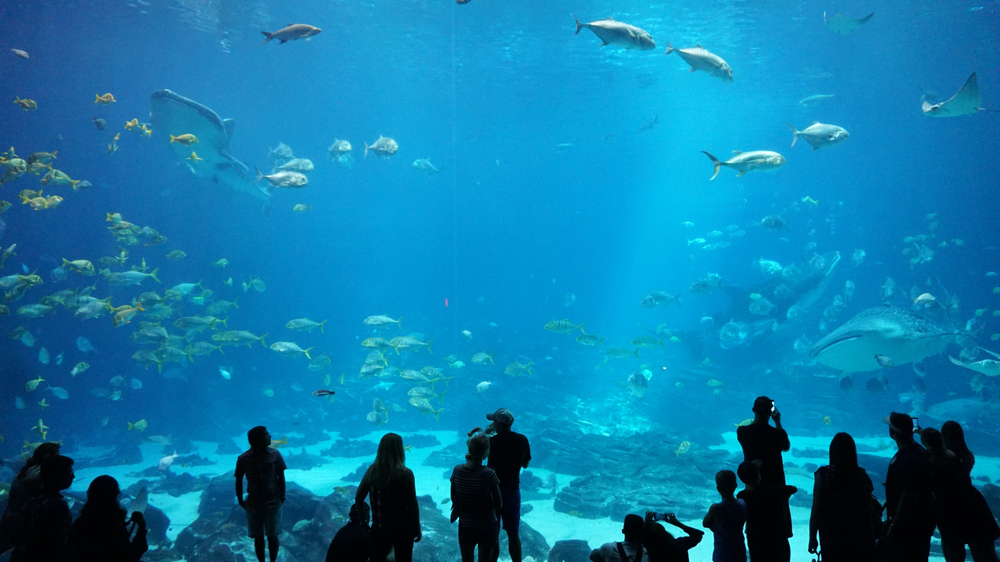

喬治亞州＿十大景點推薦
喬治亞州位於美國東南部，是一個充滿歷史和文化的地方。它有著豐富的自然資源和多樣的文化遺產，包括美食、音樂、藝術和文學等等。以下是推薦的喬治亞州景點：
薩凡納歷史區
薩凡納歷史區是喬治亞州最著名的旅遊景點之一，也是美國最古老的城市之一。這裡有許多歷史建築和文化遺產，例如薩凡納廣場、薩凡納河街、薩凡納大教堂和薩凡納孟加拉國教堂等等。你可以參加導覽，了解這個城市的歷史和文化，也可以品嚐當地的美食和葡萄酒。
喬治亞水族館
喬治亞水族館是美國最大的水族館之一，展示了許多海洋生物和淡水生物。你可以看到許多海洋生物，例如鯊魚、海龜、海豚和鱷魚等等。此外，喬治亞水族館還有一個海豚表演和一個海豚幼崽展示區，讓你可以更加了解這些神奇的生物。

大瀑布
大瀑布是喬治亞州最著名的自然景點之一，也是美國最大的瀑布之一。它位於喬治亞州與田納西州的交界處，有著壯觀的景色和美麗的自然環境。你可以參加導覽，走上步道，欣賞瀑布的美景，也可以參加各種戶外活動，例如徒步旅行、釣魚和皮划艇等等。
亞特蘭大市中心
亞特蘭大市中心是喬治亞州的首府，也是一個充滿活力和文化的城市。在這裡，你可以參觀許多著名景點，例如喬治亞水晶博物館、喬治亞州立博物館和亞特蘭大奧林匹克公園等等。此外，亞特蘭大市中心還有許多優質的餐廳、咖啡館和酒吧，讓你可以享受到當地的美食和夜生活。
艾托拉島州立公園
艾托拉島州立公園位於喬治亞州南部，是一個充滿自然美景和歷史遺產的地方。這裡有許多美麗的海灘、森林和沼澤地，還有一些歷史建築和博物館。你可以參加各種戶外活動，例如釣魚、皮划艇和徒步旅行，也可以參觀博物館，了解這個地方的歷史和文化。
阿特蘭塔動物園
阿特蘭塔動物園是美國最大的動物園之一，展示了許多不同種類的動物，例如大猩猩、獅子、老虎和大象等等。你可以參加各種動物表演和活動，讓你更加了解這些動物的生態和習性。此外，阿特蘭塔動物園還有一個兒童動物園和一個植物園，讓你可以享受到更多的自然和文化資源。
艾伯特公園
艾伯特公園是喬治亞州最大的公園之一，有著壯觀的景色和豐富的自然資源。這裡有許多步道和自行車道，讓你可以欣賞到公園的美麗風景和自然生態。此外，艾伯特公園還有一些遊樂設施和野餐區，讓你可以享受到一個愉快的戶外活動。
聖西蒙島
聖西蒙島是一個美麗的海島，位於喬治亞州海岸線附近。這裡有許多美麗的海灘和海洋景色，還有一些歷史建築和博物館。你可以參加各種水上活動，例如游泳、浮潛和划艇，也可以參觀博物館，了解這個地方的歷史和文化。
約翰斯島
約翰斯島是一個美麗的海島，位於喬治亞州沿海地區。這裡有許多美麗的海灘和自然景觀，還有一些歷史建築和博物館。你可以參加各種水上活動，例如游泳、浮潛和划艇，也可以參觀博物館，了解這個地方的歷史和文化。
薩瓦尼國家野生動物保護區
薩瓦尼國家野生動物保護區是一個充滿野生動物和自然美景的地方，位於喬治亞州南部。這裡有許多野生動物，例如鱷魚、鹿和鷹等等，還有一些美麗的湖泊和沼澤地。你可以參加各種戶外活動，例如野生動物觀察、釣魚和徒步旅行，也可以參觀博物館，了解這個地方的歷史和文化。
總結
以上是我推薦的喬治亞州十個地方，每個地方都有其獨特的風景和文化遺產，讓你可以享受到豐富的旅遊體驗。如果你計劃前往喬治亞州旅遊，不妨多安排一些時間，探索這個美麗的地方，相信你一定會有一個難忘的旅程。總之，喬治亞州是一個充滿歷史、文化和自然資源的地方，有著許多值得一遊的景點和活動。從歷史悠久的城市、壯觀的自然景觀到豐富的文化活動，喬治亞州擁有豐富的旅遊資源，讓你可以度過一個充滿活力和魅力的假期。如果你計劃前往喬治亞州旅遊，不妨多安排一些時間，探索這個美麗的地方，相信你一定會有一個難忘的旅程。